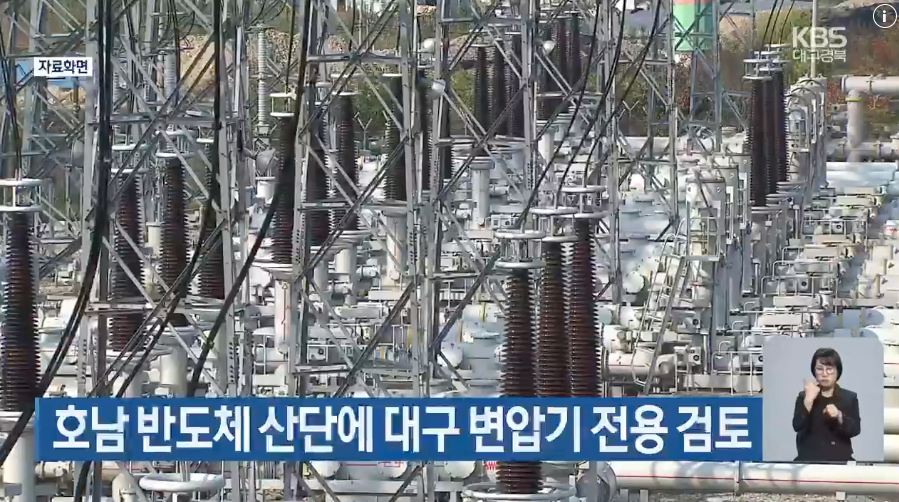

호남권 반도체 산업단지에 전력을 조기 공급하기 위해 대구 등 5개 지역 변전소에 들어갈 변압기를 돌려쓰는 방안이 검토되고 있습니다.
그럼 대구는 어케되는거야?

호남권 반도체 산업단지에 전력을 조기 공급하기 위해 대구 등 5개 지역 변전소에 들어갈 변압기를 돌려쓰는 방안이 검토되고 있습니다.
그럼 대구는 어케되는거야?
그동안 해쳐먹은죄
그동안 뭘 해쳐먹었는데? 설명좀
경상도와 전라도 어느지역이 더발전되었는가 AI한테 물어봐
나한테 쳐묻지말고
니가 설명하라고 하면 내가 설명해줘야하냐?
이새끼 뭐지?.. 지가 해쳐먹은죄라고 말해서 내가 뭘 해쳐먹었는데 물어봤는데 ai한테 물어보라네 ㅋㅋ
ㄹㅇ 대구 전기 그렇게 쓸일 많지 않으니까 좀 쓸수도 있는거 아님? 근데 생각해보니까 굳이 전기가 저쪽으로 갈 필요가 있음? 전기가 있는 쪽으로 반도체 공장을 지으면 되잖아? 렛츠고
경상도는 뭔죄야